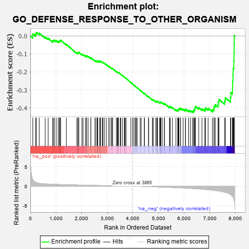
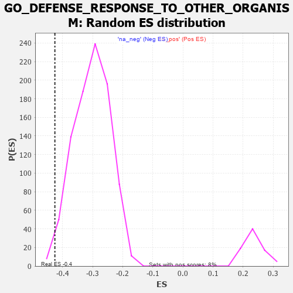

| | | Dataset | 7d |
| Phenotype | NoPhenotypeAvailable |
| Upregulated in class | na_neg |
| GeneSet | GO_DEFENSE_RESPONSE_TO_OTHER_ORGANISM |
| Enrichment Score (ES) | -0.4255373 |
| Normalized Enrichment Score (NES) | -1.4078808 |
| Nominal p-value | 0.0130576715 |
| FDR q-value | 0.31376633 |
| FWER p-Value | 1.0 |
Table: GSEA Results Summary

Fig 1: Enrichment plot: GO_DEFENSE_RESPONSE_TO_OTHER_ORGANISM
Profile of the Running ES Score & Positions of GeneSet Members on the Rank Ordered List
| PROBE | GENE SYMBOL | GENE_TITLE | RANK IN GENE LIST | RANK METRIC SCORE | RUNNING ES | CORE ENRICHMENT | | 1 | UBE2K | | | 94 | 1.739 | 0.0110 | No |
| 2 | BCL3 | | | 202 | 1.047 | 0.0111 | No |
| 3 | DCST1 | | | 237 | 0.959 | 0.0194 | No |
| 4 | CNOT7 | | | 348 | 0.750 | 0.0153 | No |
| 5 | MX1 | | | 578 | 0.604 | -0.0060 | No |
| 6 | XRCC6 | | | 694 | 0.560 | -0.0132 | No |
| 7 | TTC4 | | | 873 | 0.513 | -0.0292 | No |
| 8 | HMGB2 | | | 892 | 0.507 | -0.0248 | No |
| 9 | MATR3 | | | 937 | 0.498 | -0.0238 | No |
| 10 | HMGB4 | | | 1008 | 0.482 | -0.0264 | No |
| 11 | NCBP3 | | | 1087 | 0.466 | -0.0302 | No |
| 12 | SRC | | | 1128 | 0.459 | -0.0292 | No |
| 13 | PSMD7 | | | 1152 | 0.454 | -0.0262 | No |
| 14 | PSMD2 | | | 1181 | 0.450 | -0.0238 | No |
| 15 | EXOC1 | | | 1403 | 0.409 | -0.0466 | No |
| 16 | PSMD4 | | | 1811 | 0.335 | -0.0941 | No |
| 17 | TRIM5 | | | 1852 | 0.327 | -0.0949 | No |
| 18 | PSMD6 | | | 1858 | 0.326 | -0.0912 | No |
| 19 | PAK3 | | | 1889 | 0.322 | -0.0908 | No |
| 20 | RAF1 | | | 2011 | 0.303 | -0.1023 | No |
| 21 | IRF4 | | | 2054 | 0.298 | -0.1037 | No |
| 22 | PSME4 | | | 2143 | 0.285 | -0.1111 | No |
| 23 | SYK | | | 2186 | 0.278 | -0.1128 | No |
| 24 | C1QBP | | | 2189 | 0.278 | -0.1094 | No |
| 25 | PSMF1 | | | 2251 | 0.268 | -0.1137 | No |
| 26 | MIF | | | 2357 | 0.252 | -0.1237 | No |
| 27 | SIN3A | | | 2361 | 0.251 | -0.1208 | No |
| 28 | TLR1 | | | 2517 | 0.224 | -0.1376 | No |
| 29 | PSMD5 | | | 2560 | 0.218 | -0.1401 | No |
| 30 | PDE12 | | | 2608 | 0.211 | -0.1433 | No |
| 31 | WIPI2 | | | 2618 | 0.210 | -0.1417 | No |
| 32 | PUM2 | | | 2627 | 0.209 | -0.1400 | No |
| 33 | ABCF3 | | | 2628 | 0.209 | -0.1372 | No |
| 34 | CLPB | | | 2706 | 0.198 | -0.1444 | No |
| 35 | PHB2 | | | 2712 | 0.197 | -0.1425 | No |
| 36 | DDX1 | | | 2718 | 0.196 | -0.1405 | No |
| 37 | CUL1 | | | 2735 | 0.193 | -0.1400 | No |
| 38 | FER | | | 2803 | 0.183 | -0.1461 | No |
| 39 | BECN1 | | | 2828 | 0.179 | -0.1468 | No |
| 40 | DAPK3 | | | 2880 | 0.169 | -0.1511 | No |
| 41 | BTK | | | 2958 | 0.156 | -0.1589 | No |
| 42 | ABCE1 | | | 3051 | 0.143 | -0.1687 | No |
| 43 | AIMP1 | | | 3105 | 0.136 | -0.1737 | No |
| 44 | GCH1 | | | 3166 | 0.127 | -0.1796 | No |
| 45 | PSMD9 | | | 3179 | 0.125 | -0.1795 | No |
| 46 | AP1G1 | | | 3210 | 0.121 | -0.1818 | No |
| 47 | TAB1 | | | 3351 | 0.097 | -0.1983 | No |
| 48 | DDX3X | | | 3388 | 0.091 | -0.2017 | No |
| 49 | MED1 | | | 3405 | 0.089 | -0.2026 | No |
| 50 | TRIL | | | 3428 | 0.087 | -0.2043 | No |
| 51 | SARM1 | | | 3432 | 0.086 | -0.2035 | No |
| 52 | FES | | | 3501 | 0.077 | -0.2112 | No |
| 53 | PQBP1 | | | 3526 | 0.072 | -0.2133 | No |
| 54 | MAPK3 | | | 3589 | 0.062 | -0.2204 | No |
| 55 | SKP1 | | | 3663 | 0.049 | -0.2290 | No |
| 56 | CD180 | | | 3686 | 0.046 | -0.2312 | No |
| 57 | DHX9 | | | 3693 | 0.044 | -0.2314 | No |
| 58 | SYT11 | | | 3732 | 0.036 | -0.2358 | No |
| 59 | IFIH1 | | | 3919 | 0.006 | -0.2594 | No |
| 60 | DDX58 | | | 3998 | -0.007 | -0.2693 | No |
| 61 | ECSIT | | | 4002 | -0.008 | -0.2696 | No |
| 62 | CSF1 | | | 4074 | -0.019 | -0.2784 | No |
| 63 | CHID1 | | | 4099 | -0.023 | -0.2811 | No |
| 64 | CRK | | | 4139 | -0.031 | -0.2857 | No |
| 65 | DDX17 | | | 4161 | -0.035 | -0.2879 | No |
| 66 | PSME3 | | | 4280 | -0.056 | -0.3022 | No |
| 67 | ROMO1 | | | 4320 | -0.063 | -0.3063 | No |
| 68 | SETD2 | | | 4443 | -0.084 | -0.3208 | No |
| 69 | CDC37 | | | 4446 | -0.084 | -0.3200 | No |
| 70 | NUB1 | | | 4604 | -0.119 | -0.3384 | No |
| 71 | GATA3 | | | 4614 | -0.120 | -0.3380 | No |
| 72 | CNPY3 | | | 4758 | -0.149 | -0.3542 | No |
| 73 | RAB14 | | | 4784 | -0.155 | -0.3554 | No |
| 74 | SRPK2 | | | 4790 | -0.155 | -0.3540 | No |
| 75 | CLU | | | 4889 | -0.174 | -0.3642 | No |
| 76 | CASP1 | | | 4932 | -0.185 | -0.3671 | No |
| 77 | EP300 | | | 4941 | -0.186 | -0.3657 | No |
| 78 | XRCC5 | | | 4946 | -0.187 | -0.3637 | No |
| 79 | PRKDC | | | 4955 | -0.189 | -0.3622 | No |
| 80 | PDPK1 | | | 5043 | -0.207 | -0.3706 | No |
| 81 | DDX41 | | | 5058 | -0.211 | -0.3696 | No |
| 82 | FLNB | | | 5082 | -0.220 | -0.3696 | No |
| 83 | DRD2 | | | 5088 | -0.221 | -0.3673 | No |
| 84 | IPO7 | | | 5142 | -0.236 | -0.3710 | No |
| 85 | TMF1 | | | 5225 | -0.251 | -0.3781 | No |
| 86 | DDX21 | | | 5231 | -0.252 | -0.3754 | No |
| 87 | PPM1B | | | 5422 | -0.300 | -0.3957 | No |
| 88 | LYST | | | 5448 | -0.307 | -0.3949 | No |
| 89 | FRK | | | 5451 | -0.307 | -0.3911 | No |
| 90 | PCBP2 | | | 5539 | -0.331 | -0.3978 | No |
| 91 | PSMD1 | | | 5674 | -0.367 | -0.4100 | No |
| 92 | MX2 | | | 5745 | -0.390 | -0.4138 | No |
| 93 | TLR2 | | | 5761 | -0.395 | -0.4105 | No |
| 94 | VAMP7 | | | 5777 | -0.399 | -0.4072 | No |
| 95 | LAMP1 | | | 5796 | -0.404 | -0.4042 | No |
| 96 | TKFC | | | 5854 | -0.419 | -0.4059 | No |
| 97 | ATG7 | | | 5858 | -0.420 | -0.4007 | No |
| 98 | PRDM1 | | | 5956 | -0.457 | -0.4071 | No |
| 99 | VAMP3 | | | 6043 | -0.487 | -0.4116 | No |
| 100 | EVL | | | 6052 | -0.490 | -0.4062 | No |
| 101 | EGR1 | | | 6165 | -0.527 | -0.4135 | No |
| 102 | CDC42 | | | 6236 | -0.548 | -0.4152 | No |
| 103 | NCAM1 | | | 6318 | -0.582 | -0.4179 | Yes |
| 104 | BIRC3 | | | 6366 | -0.603 | -0.4159 | Yes |
| 105 | ISG15 | | | 6385 | -0.608 | -0.4102 | Yes |
| 106 | MBL2 | | | 6411 | -0.623 | -0.4051 | Yes |
| 107 | RAB43 | | | 6419 | -0.628 | -0.3977 | Yes |
| 108 | MALT1 | | | 6432 | -0.634 | -0.3909 | Yes |
| 109 | OTOP1 | | | 6562 | -0.690 | -0.3983 | Yes |
| 110 | PAK1 | | | 6691 | -0.757 | -0.4046 | Yes |
| 111 | KYNU | | | 6802 | -0.816 | -0.4079 | Yes |
| 112 | LYAR | | | 6828 | -0.830 | -0.4001 | Yes |
| 113 | LRP8 | | | 6931 | -0.889 | -0.4014 | Yes |
| 114 | RAB1A | | | 7096 | -0.993 | -0.4092 | Yes |
| 115 | UFD1 | | | 7157 | -1.040 | -0.4032 | Yes |
| 116 | COTL1 | | | 7166 | -1.046 | -0.3904 | Yes |
| 117 | MPEG1 | | | 7210 | -1.083 | -0.3816 | Yes |
| 118 | GRN | | | 7319 | -1.194 | -0.3796 | Yes |
| 119 | CYLD | | | 7333 | -1.206 | -0.3654 | Yes |
| 120 | PLAC8 | | | 7355 | -1.223 | -0.3519 | Yes |
| 121 | NLRC3 | | | 7574 | -1.515 | -0.3597 | Yes |
| 122 | ELF4 | | | 7600 | -1.551 | -0.3424 | Yes |
| 123 | MUC2 | | | 7802 | -2.066 | -0.3408 | Yes |
| 124 | TRAF6 | | | 7818 | -2.157 | -0.3143 | Yes |
| 125 | FYN | | | 7881 | -2.622 | -0.2876 | Yes |
| 126 | TRAF3 | | | 7886 | -2.695 | -0.2526 | Yes |
| 127 | MUC19 | | | 7900 | -2.797 | -0.2173 | Yes |
| 128 | PSMD3 | | | 7907 | -2.887 | -0.1800 | Yes |
| 129 | PSMD8 | | | 7931 | -3.286 | -0.1396 | Yes |
| 130 | MRC1 | | | 7940 | -3.475 | -0.0948 | Yes |
| 131 | XIAP | | | 7947 | -3.696 | -0.0468 | Yes |
| 132 | DAPK1 | | | 7950 | -3.767 | 0.0027 | Yes |
Table: GSEA details [plain text format]

Fig 2: GO_DEFENSE_RESPONSE_TO_OTHER_ORGANISM: Random ES distribution
Gene set null distribution of ES for GO_DEFENSE_RESPONSE_TO_OTHER_ORGANISM